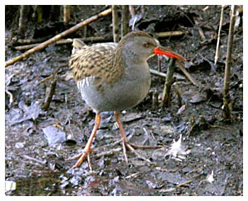

Water Rail
A regular winter visitor to the reed beds of Chard reservoir. Normally single birds, sometimes 2, these shy & retiring Rails are usually given away by their harsh 'squealing' calls.

10/10/57 - single bird.
22/10/59 - Single bird.
19/03/64 - Single bird.
20/10/66 - Single bird.
01/05/69 - Single bird.
13/11/69 - Single bird. Recorded again on 20/11.
1991 - Single bird recorded during 1st winter period.
18/10/92 - Single bird recorded over the winter, often seen from the hide.
18/02/93 - Single bird. Another bird recorded at nearby sewage works on 12/11.
28/11/94 - Single bird calling. Seen on 17/12.
06/01/95 - Single bird calling.
08/09/95 - Adult bird seen.
07/10/96 - Single bird seen & heard. Recorded as possibly being present since 24/09.
??/12/96 - 2 birds recorded.
??/01/97 - 2 or 3 birds present. Seen & heard on many dates.
??/10/97 - Single bird until year end.
??/01/98 - Single bird heard on many dates.
17/10/98 - Single bird present until year end.
1999 - Single bird heard throughout January, February & March.
27/09/99 - Single bird present until year end, joined by 1 or 2 more in December.
2000 - Recorded on 6 winter dates with notably 2 on 07/11 and 3 on 16/12.
2001 - Recorded on 11 winter dates with notably 2 on 21/01, 2 on 4 dates in November with possibly 3 on 17/11
2002 - Singles heard or seen on 10 winter dates.
2003 - Recorded on 11 winter dates with 2 on 31/10
2004 - Singles recorded on 10 winter dates
2005 - Singles recorded on 7 winter dates
2006 - None recorded
2007 - Just one reported on 23/12
2008 - Just one reported on 21/11
2009 - Single on 29/10/09
2010 - 1 on 08/01 and 1 on 27/11
2011 - 1 on 27/08 and 1 on 04/11
2012 - None recorded
2013 - 1 on 03/03 and 1 on 08/03, 2 on 09/03, 1 on 03/10, 1 on 26/10
2014 - 1 on 24/08
2015 - None recorded
2016 - None recorded
2017 - 1 on 13/01 and 1 on 26/10
2018 - 1 on 19/09, 1 on 05/10, 1 on 09/10 and 1 heard on 14/12
2019 - No sightings, but heard on 15/09, 25/09, 07/10 and 06/11 in the res area and once on 04/10 just outside the south end near the recycling centre
2020 - None recorded
2021 - 1 on 18/09 and 1 on 20/09 in SE reedbed
2022 - Call first heard on 05/09, then 1 or 2 seen regularly in the SE corner until 03/11. On 06/10 there was one seen at the north end as well as 2 in the SE corner
2023 - Call first heard on 11/11 and again on 4 further winter dates near the hide. 2 birds calling on 12/11
2024 - Call heard on 22/02 and 24/02 at the south end. Then 1 seen on 07/08. 2 seen near hide on 27/10 and 1 heard in the SE reeds on 23/12
2025 - Recorded 8 times. 1 on 05/02, then none until 29/10. Mostly sharming calls heard (like squealing pig) but 'Kip' calls heard on 27/11, Also seen in November and December